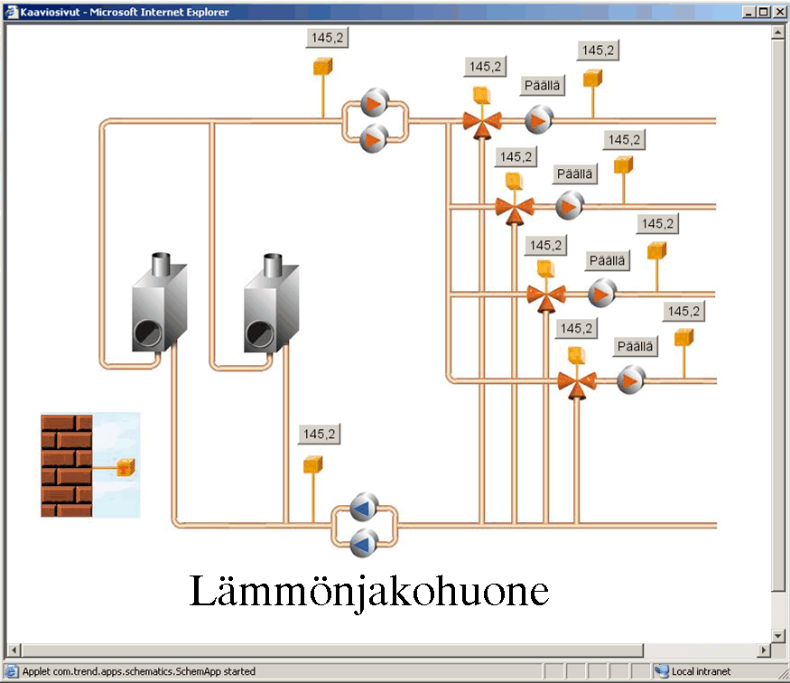

Alla näkyvä Kaaviosivujen näyttö kaaviosivun näytön. Kun ohjelmaan kirjaudutaan web-selaimelta, joka tukee 963:n graafista tilaa, se näyttää sivut käytännöllisesti katsoen samanlaisina kuin palvelinkoneella. Näytössä voit katsoa tietoja ja napsauttamalla kohteita voit suorittaa erilaisia tehtäviä. Sivun näytöltä tulisi käydä selville, mitä on mahdollista tehdä. Kun napsautat hiiren oikeanpuoleisella painikkeella mitä tahansa kohtaa sivun taustassa, saat esiin valikon, josta pääset ohjeeseen ja josta voit siirtyä seuraavalle tai edelliselle sivulle. Työasemakoneella ei ole laitepaneelinäyttöä; navigointi on suoritettava suoraan sivuilla olevilla painikkeilla.

Kun ohjelmaan kirjaudutaan web-selaimelta, joka ei tue 963:n graafista tilaa, 963 Server näyttää sivut tekstimuodossa, ilman grafiikkaa. Sivu esitetään kolmena taulukkona, jotka sisältävät reaaliaikaiset tiedot, toimenpiteet ja lisätiedot. Tekstitilaa varten on erilaisia layouteja eri laitetyypeille. Työasemakoneelle sopiva layout valitaan automaattisesti. Kaikki layoutit tarjoavat samat toiminnot, mutta näytettävät tiedot muokataan näyttökoon ja kuvasuhteen mukaisesti.